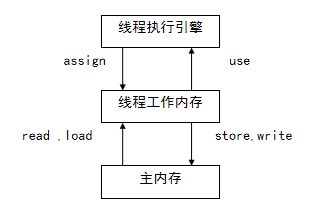

在这篇文章主要分析学习JVM的包括启动流程等等重要的知识点。
JVM基本结构
PC寄存器
- 每一个线程拥有PC寄存器
- 在线程创建时创建
- 执行本地方法时该值是undefined
- 指向下一条指令的地址
方法区
- 保存装载的类的元信息
- 类型的常量池（JDK6时候，String等常量信息置于方法区，JDK7时候移动到了堆）
- 字段，方法信息
- 方法字节码
- 通常和永久区（Perm）关联在一起，Perm保存相对不容易发生变动
Java堆
- 和程序开发密切相关
- 应用系统对象都保存在Java堆中
- 所有线程共享Java堆
- 对于分代GC来说，堆也是分代的
- GC主要工作的区间
- eden 伊甸园，对象“出身”的地方
- S0和S1
- tenured
Java栈
线程私有的
栈由一系列帧组成(Java栈也叫帧栈)
帧保存一个方法的局部变量，操作数栈，常量池指针
每次方法调用创建一个帧并且压栈
Java栈-局部变量表（包括函数的传入参数以及局部变量）
- 注意如果是类的实例方法会传入this
Java栈-操作数栈（Java没有寄存器，所有参数传递使用操作数栈，来完成寄存器的功能）
此案例程序对应的局部变量表与操作数栈

Java栈-栈上分配
C语言包括C++的变量可以选择使用栈上分配的方式，这样的好处也很明显，不用去担心内存泄漏的问题，Java也可以进行栈上分配：
如下小实例将演示开启逃逸分析与不开启逃逸分析的区别：
1
2
3
4
5
6
7
8
9
10
11
12
13
14
15
16
17
18
19
20
21
22
23/**
虚拟机参数
-server 使用服务器模式
-Xmx10m 设置最大的Java堆大小
-Xms10m 设置设置初始Java堆大小
-XX:+DoEscapeAnalysis 开启逃逸分析
-XX:+PrintGC 打印GC日志
*/
public class Test1 {
public static void alloc(){
byte[] b = new byte[2];
b[0]=1;
}
public static void main(String[] args){
long b = System.currentTimeMillis();
for (int i = 0;i<100000000;i++){
alloc();
}
long e = System.currentTimeMillis();
System.out.println(e-b);
}
}执行之后，将逃逸分析的+改为-再次执行，为不开启之后，对比时间，在开启逃逸分析之后的时间差为6ms，而不开启逃逸分析的时间为：使用了1071ms，同时打印了大量的GC日志。
[插]关于逃逸分析
老帖，但是由于原博客无法访问，只好找到360Doc网站人们转载的副本，在网上找到的转载到这里
什么是逃逸分析
在编程语言的编译优化原理中，分析指针动态范围的方法称之为逃逸分析。它跟静态代码分析技术中的指针分析和外形分析类似。
通俗一点讲，当一个对象的指针被多个方法或线程引用时，我们称这个指针发生了逃逸。而用来分析这种逃逸现象的方法，就称之为逃逸分析。
逃逸的场景
1 | class A { |
在这个例子中，一共举了3种常见的指针逃逸场景。分别是 全局变量赋值，方法返回值，实例引用传递。
逃逸分析优化JVM的原理
我们知道java对象是在堆里分配的，在调用栈中，只保存了对象的指针。
当对象不再使用后，需要依靠GC来遍历引用树并回收内存，如果对象数量较多，将给GC带来较大压力，也间接影响了应用的性能。减少临时对象在堆内分配的数量，无疑是最有效的优化方法。
怎么减少临时对象在堆内的分配数量呢？不可能不实例化对象吧！
其实，在java应用里普遍存在一种场景。一般是在方法体内，声明了一个局部变量，且该变量在方法执行生命周期内未发生逃逸（在方法体内，未将引用暴露给外面）。
按照JVM内存分配机制，首先会在堆里创建变量类的实例，然后将返回的对象指针压入调用栈，继续执行。
这是优化前，JVM的处理方式。
使用栈上分配的优化策略
优化原理：分析找到未逃逸的变量，将变量类的实例化内存直接在栈里分配(无需进入堆)，分配完成后，继续在调用栈内执行，最后线程结束，栈空间被回收，局部变量对象也被回收。
这是优化后的处理方式，对比可以看出，主要区别在栈空间直接作为临时对象的存储介质。从而减少了临时对象在堆内的分配数量。
逃逸分析的原理很简单，但JVM在应用过程中，还是有诸多考虑。
比如，逃逸分析不能在静态编译时进行，必须在JIT里完成。原因是，与java的动态性有冲突。因为你可以在运行时，通过动态代理改变一个类的行为，此时，逃逸分析是无法得知类已经变化了。
另外一个重要的优化，同步消除
如果你定义的类的方法上有同步锁，但在运行时，却只有一个线程在访问，此时逃逸分析后的机器码，会去掉同步锁运行。
总结
- 小对象（一般几十个bytes），在没有逃逸的情况下，可以直接分配在栈上
- 直接分配在栈上，可以自动回收，减轻GC压力
- 大对象或者逃逸对象无法栈上分配
堆、栈、方法区交互
Java内存模型

内存模型分为三个部分，每个线程都有一个工作内存和主存内存，之上是线程执行引擎，其交互如上图的Java字节码指令。
线程工作内存可以看作是CPU中的cache，而主内存可以对应到物理内存上去理解
当数据从主内存复制到工作存储时，必须出现两个动作：第一，由主内存执行的读（read）操作；第二，由工作内存执行的相应的load操作；当数据从工作内存拷贝到主内存时，也出现两个操作：第一个，由工作内存执行的存储（store）操作；第二，由主内存执行的相应的写（write）操作
每一个操作都是原子的，即执行期间不会被中断
对于普通变量，一个线程中更新的值，不能马上反应在其他变量中,如果需要在其他线程中立即可见，需要使用 volatile(易失的) 关键字

可见性
一个线程修改了变量，其他线程可以立即知道
保证可见性的方法
- volatile
- synchronized(unlock之前，写变量值回主存)
final(一旦初始化完成，其他线程就可见)
有序性
在本线程内部，操作都是有序的，尽管会发生指令重排，但是语义Java编译器负责保证不变
- 在线程外观察，操作都是无序的。（指令重排或者主内存同步演示，编译器不考虑多线程之间的语义）
指令重排
- 线程内部串行语义
- 写后读 a=1；b=a；
- 写后写 a=1; a=2;
- 读后写 a=b;b=1；
- 以上语句不可重排
- 编译器不考虑多线程间的语义
- a=1，b=2就可以重排
指令重排破坏线程之间的有序性
指令重排保证有序性的方法
使用同步机制：(平行变串行)
指令重排的基本原则
- 程序顺序原则：一个线程内保证语义的串行性
- volatile规则：volatile变量的写，先发生于读
- 锁规则：解锁(unlock)必然发生在随后的加锁(lock)前
- 传递性：A先于B，B先于C 那么A必然先于C
- 线程的start方法先于它的每一个动作
- 线程的所有操作先于线程的终结（Thread.join()）
- 线程的中断（interrupt()）先于被中断线程的代码
- 对象的构造函数执行结束先于finalize()方法
解释运行与编译运行
解释运行
解释执行以解释方式运行字节码
解释执行的意思是：读一句，执行一句
编译运行（JIT）
将字节码编译成机器码
直接执行机器码
运行时编译
编译后性能有数量级的提升